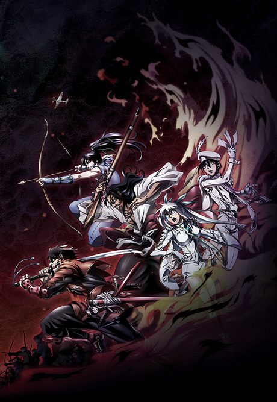
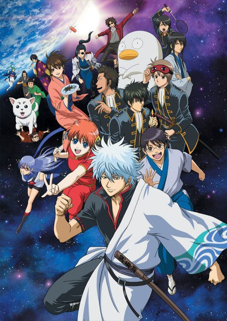
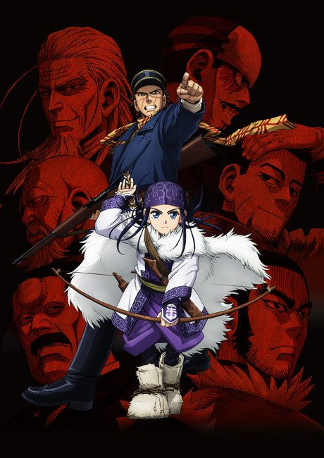
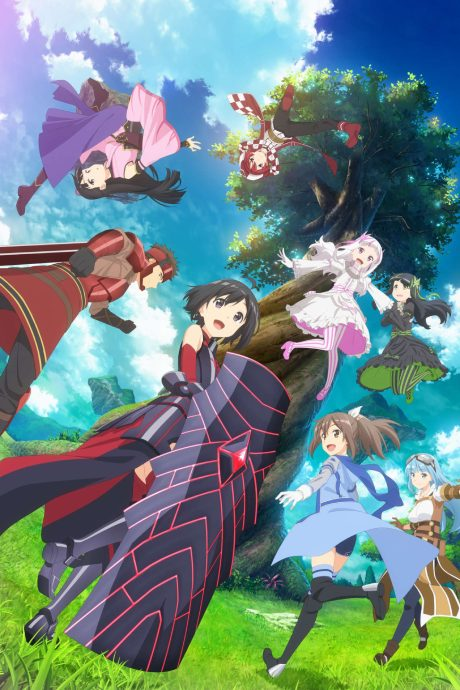

The Ambition of Oda Nobuna
織田信奈の野望
After the anime, read the light novel from Volume 5.
7.0AniList score
—Animeter, no votes yet
12episodes
Anime finished. Where does the story go next?
Start at Volume5
The anime is based on volumes 1 to 4 of the light novels; start at volume 5. The exact stopping point inside volume 4 is not stated.
1422 end
Season 1Start reading here
More like The Ambition of Oda Nobuna

Manga Ch. 457.5
Adapted8.5
VN6.2
YU-NO: A Girl Who Chants Love at the Bound of This World
Manga Ch. 3037.7 Adapted9.0
Adapted9.0

Manga Vol. 107.3